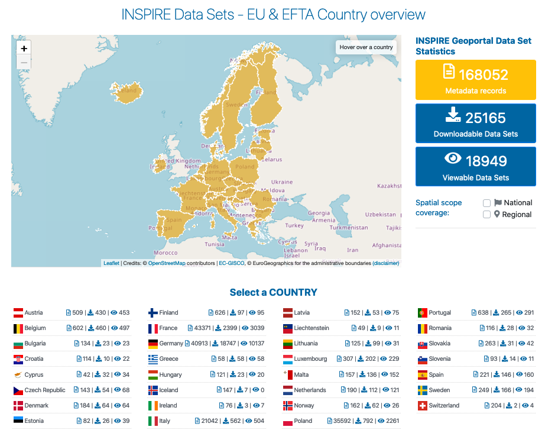

INSPIRE¶
La Direttiva INSPIRE mira a creare una infrastruttura dati territoriali (IDT), a sostegno delle politiche ambientali. Tale IDT europea consente la condivisione di dati territoriali sull’ambiente fra enti pubblici, facilita l’accesso pubblico ai dati territoriali e assiste nella definizione di politiche attraverso i confini. INSPIRE si basa sulle infrastrutture dati territoriali create e gestite dai 27 Stati Membri dell’Unione Europea. La Direttiva (si veda il testo completo) è entrata in vigore il 15 maggio 2007 e viene implementata attraverso vari stadi, richiedendo una completa implementazione entro il 2021. Tecnicamente INSPIRE si basa su standard internazionali, soprattutto quelli sviluppati da OGC e ISO.
The datasets falling under the scope of the INSPIRE Directive are grouped into 34 cross-sectoral categories named spatial data themes, which are defined in the Annexes of the Directive and reflect two main types of data: geospatial reference data, presented in Annex I and partly Annex II, which define a location reference that the remaining domain-specific themes (in Annex III and partly Annex II) can then refer to.
Public sector authorities whose data falls within the scope of the INSPIRE Directive shall:

- document them through metadata;
- expose them through network services: discovery services (to discover the data), view services (to access the data) and download services (to download the data);
- harmonise their spatial datasets in accordance with common data models defined for each theme.
{kind=link}
Currently, more than 7,000 European public institutions contribute their data to INSPIRE. A significant share of them make use of OSGeo software projects throughout the implementation process. OSGeoLive provides an easy entry to the INSPIRE implementation process through an increasing number of examples with sample European data from multiple application domains included in the available software tutorials. In addition, a dedicated page on INSPIRE under the OSGeo wiki is maintained that gives an overview of the legal and technical aspects of INSPIRE together with selected use cases and an overview of OSGeo software projects that implementers may use.
The Joint Research Centre (JRC) of the European Commission develops and maintains a number of central software components, which help Member States in the INSPIRE implementation process:
- the INSPIRE Registry, based on the open source Re3gistry software, manages the unique identifiers and descriptions of INSPIRE resources such as themes, code lists and application schemas;
- the INSPIRE Reference Validator, based on the open source ETF testing framework, allows to test that metadata, datasets and services are compliant with INSPIRE requirements;
- the INSPIRE Geoportal allows to discover, access and download all the datasets made available by Member States under INSPIRE.